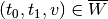
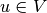
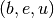
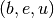

[2]:
import matplotlib.pyplot as plt
import straph as sg
[3]:
plt.rcParams["figure.figsize"] = (12,9)
Temporal Paths in Stream Graph¶
In this tutorial we will use the example below, feel free to change it (cf: Notebook on random stream graphs).
[4]:
path_directory = "examples/"
S = sg.read_stream_graph(path_nodes=path_directory + "example_nodes.sg",
path_links=path_directory + "example_links.sg")
S.describe()
Nb of Nodes : 6
Nb of segmented nodes : 11.0
Nb of links : 8
Nb of segmented links : 11.0
Nb of event times : 11
[5]:
S.plot()
[5]:
<AxesSubplot:xlabel='t', ylabel='Nodes'>
In the following we use Straph’s API to compute different types of temporal paths.
We can consider two types of source and destination : a temporal node  or a node . Resulting in 4 types of temporal paths:
- temporal source -> destination
- temporal source -> temporal destination
- source -> temporal destination
- source -> destination
[6]:
P = sg.Path(times=[0, 3, 4, 6],
links=[(5, 5), (5, 4), (4, 1), (1, 2)], )
P.plot(S, dag=True)
# FoP (0,A)-F
P = sg.Path(times=[0, 3, 6, 7, 7],
links=[(0, 0), (0, 1), (1, 2), (2, 4), (4, 5)], )
P.plot(S)
# plt.show()
# SFoP (0,A)-F
P = sg.Path(times=[0, 2, 4, 7],
links=[(0, 0), (0, 1), (1, 4), (4, 5)], )
P.plot(S)
# FP A-F
P = sg.Path(times=[4, 6, 7, 7],
links=[(0, 1), (1, 2), (2, 4), (4, 5)], )
P.plot(S)
# plt.show()
# SFP A-F
P = sg.Path(times=[4, 4, 7],
links=[(0, 1), (1, 4), (4, 5)], )
P.plot(S)
# plt.show()
# SP A-D
P = sg.Path(times=[4, 6, 9],
links=[(0, 1), (1, 2), (2, 3)])
P.plot(S)
# plt.show()
# FSP A-D
P = sg.Path(times=[4, 4, 8],
links=[(0, 1), (1, 4), (4, 3)], )
P.plot(S)
plt.show()
S.times_to_reach((0, 5, 0))


[6]:
{5: 0, 4: 0.0, 3: 2.0, 2: 5.0, 1: 5.0, 0: 8.0}
Optimal temporal paths¶
We consider the following types of temporal paths and their corresponding features:
- Foremost Path - Time To Reach
- Fastest Path - Latency
- Shortest Path - Distance
- Foremost Shortest Path - Distance, Duration
- Fastest Shortest Path - Distance, Duration
- Shortest Fastest Path - Latency, Length
[7]:
label_to_node = {v:k for k,v in S.node_to_label.items()}
1. L-Algorithm¶
[7]:
#TODO : Quick description then ref to paper !
1.1 Foremost Path¶
Let’s start with a temporal source and a temporal destination.
[10]:
source = (0,5,label_to_node['A'])
destination = (8,10,label_to_node['D'])
Let’s compute the time to reach (8,10,D) from (0,5,A). By default the starting time is
 if the source is .
if the source is .
[11]:
ttr = S.times_to_reach(source,destination)
ttr
[11]:
{(8, 10, 3): inf}
We can specify a starting time, which belong to the temporal source (obviously), let’s say 4.
[12]:
source = (0,5,label_to_node['A'])
destination = (8,10,label_to_node['D'])
start_time = 4
ttr = S.times_to_reach(source,destination,start_time)
ttr
[12]:
{(8, 10, 3): inf}
Now, with a source node and a temporal destination:
[13]:
source = label_to_node['A']
destination = (8,10,label_to_node['D'])
ttr = S.times_to_reach(source,destination)
ttr
[13]:
{(8, 10, 3): inf}
Let’s add a starting time:
[14]:
source = label_to_node['A']
destination = (8,10,label_to_node['D'])
start_time = 8
ttr = S.times_to_reach(source,destination,start_time)
ttr
[14]:
{(8, 10, 3): inf}
Finally with a source node and a destination node:
[15]:
source = label_to_node['A']
destination = label_to_node['D']
ttr = S.times_to_reach(source,destination)
ttr
[15]:
{3: 8.0}
Let’s add a starting time:
[16]:
source = label_to_node['A']
destination = label_to_node['D']
start_time = 3
ttr = S.times_to_reach(source,destination,start_time)
ttr
[16]:
{3: 5.0}
The input for a single source can be a source node or a temporal source node.
[17]:
source = (0,5,label_to_node['A'])
ttr = S.times_to_reach(source)
ttr
[17]:
{5: 0, 4: 0.0, 3: 2.0, 2: 5.0, 1: 5.0, 0: 8.0}
[18]:
source = (0,5,label_to_node['A'])
start_time = 3
ttr = S.times_to_reach(source,start_time=start_time)
ttr
[18]:
{5: 0, 4: 0, 3: 0, 2: 2.0, 1: 2.0, 0: 5.0}
[19]:
source = label_to_node['A']
ttr = S.times_to_reach(source)
ttr
[19]:
{0: 0.0, 1: 0.0, 2: 4.0, 4: 5.0, 5: 6.0, 3: 8.0}
[20]:
source = label_to_node['A']
start_time = 7
ttr = S.times_to_reach(source,start_time=start_time)
ttr
[20]:
{0: 0}
1.2 Other kind of optimal paths¶
The API is the same for all type of minimum temporal path (the start_time option is only available for foremost path and shortest foremost path).
Shortest Foremost Path¶
[21]:
source = (2,label_to_node['A'])
destination = label_to_node['D']
ttr,length = S.times_to_reach_and_lengths(source,destination)
ttr,length
[21]:
({3: 6.0}, {3: 3})
[22]:
source = (2,label_to_node['A'])
destination = label_to_node['D']
start_time = 4
ttr = S.times_to_reach_and_lengths(source,destination,start_time)
ttr
[22]:
({3: 4.0}, {3: 3})
Shortest Path¶
[23]:
source = label_to_node['A']
destination = label_to_node['D']
distances = S.distances(source,destination)
distances
[23]:
{3: 3}
Fastest Path¶
[24]:
source = label_to_node['A']
destination = label_to_node['D']
latencies = S.latencies(source,destination)
latencies
[24]:
{3: 4.0}
Fastest Shortest Path¶
[25]:
source = label_to_node['A']
source = (0,5,label_to_node['A'])
distances,durations = S.distances_and_durations(source)
distances,durations
[25]:
({5: 0, 4: 1, 3: 1, 2: 2, 1: 2, 0: 3},
{5: 0, 4: 0, 3: 0, 2: 1.0, 1: 3.0, 0: 4.0})
[26]:
source = label_to_node['A']
destination = label_to_node['D']
distances = S.distances_and_durations(source)
distances
[26]:
({0: 0, 1: 1, 2: 2, 4: 2, 5: 3, 3: 3},
{0: 0, 1: 0, 2: 0.0, 4: 3.0, 5: 3.0, 3: 4.0})
Shortest Fastest Path¶
[27]:
source = label_to_node['A']
latencies,lengths = S.latencies_and_lengths(source)
latencies,lengths
[27]:
({0: 0, 1: 0, 2: 0.0, 4: 1.0, 5: 2.0, 3: 4.0},
{0: 0, 1: 1, 2: 2, 4: 3, 5: 4, 3: 3})
[28]:
source = (0,5,label_to_node['A'])
destination = label_to_node['D']
latencies,lengths = S.latencies_and_lengths(source,destination)
latencies,lengths
[28]:
({3: 0}, {3: 1})
[29]:
source = label_to_node['A']
destination = label_to_node['D']
latencies,lengths = S.latencies_and_lengths(source,destination)
latencies,lengths
[29]:
({3: 4.0}, {3: 3})
Condensation Based Path Algorithms¶
We propose alternative methods to compute Foremost Paht and Fastest Path using the
Condensation Graph of  .
.
[38]:
source = label_to_node['A']
dag = S.condensation_dag()
# Foremost Path
ttr = dag.times_to_reach_ss(source)
print("Times to reach :",ttr)
# Fastest Path
lat = dag.latencies_ss(source)
print("Latencies :",lat)
Times to reach : {2: 4.0, 3: 8.0, 4: 5.0, 5: 6.0, 0: 0, 1: 0.0}
Latencies : {2: 0, 3: 4.0, 4: 1.0, 5: 2.0, 0: 0, 1: 0}